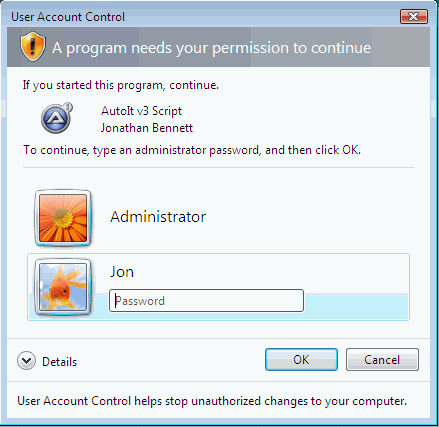
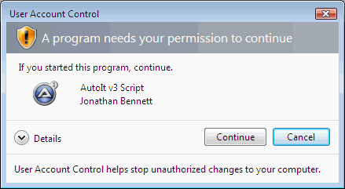
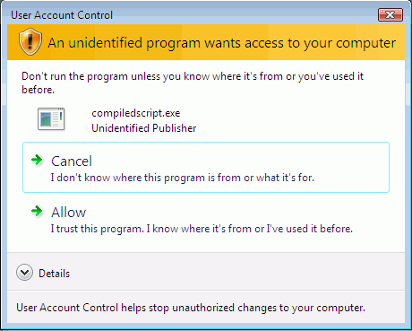

Начиная с Windows Vista в Windows появились новые механизмы безопасности, ограничивающие запуск файлов, требующих прав администратора. Даже пользователей с административным доступом будут переспрашивать каждый раз при запуске исполняемого файла, выполняющего административные операции (например, запись в раздел реестра HKEY_LOCAL_MACHINE или запись в каталог C:\Windows). Это называется контроль учётных записей пользователей (UAC).
По умолчанию скрипты AutoIt выполняются со стандартными правами пользователя, но в AutoIt предусмотрена возможность "пометить" скрипт – указать, нужны ли ему полные права администратора.
Чтобы скрипт пытался запуститься с правами администратора, добавьте в начало скрипта директиву #RequireAdmin:
; Этот скрипт требует полных прав администратора
#RequireAdmin
#include <MsgBoxConstants.au3>
MsgBox($MB_OK, "Info", "This script has admin rights! ")
При запуске скрипта AutoIt проверит, есть ли у него уже полные права администратора, и если нет – заставит ОС запросить у пользователя разрешение, как показано в разделе "Запросы UAC". Если пользователь не даёт разрешения, скрипт завершится.
Запросы при запуске программы, требующей прав администратора, похожи на показанные ниже. Тип запроса зависит от того, является ли пользователь "обычным" или "администратором". Учтите, что даже администраторам потребуется повышение прав для выполнения административных операций.
Примечание: показанные запросы относятся к подписанной цифровой подписью версии AutoIt – все релизы подписаны, а бета-версии могут не быть подписаны и выдадут предупреждение, как показано в разделе "Скомпилированные скрипты" ниже.
Запрос для обычного пользователя

Обычный пользователь должен выбрать имя учётной записи и ввести пароль, чтобы продолжить и запустить скрипт с повышенными правами.
Запрос для администратора

Поскольку пользователь уже администратор и нужно лишь повышение, достаточно нажать "Продолжить" – пароль не требуется.
Скомпилированные скрипты (и, возможно, бета-версии AutoIt) не подписаны цифровой подписью и выдадут более суровое предупреждение, как показано:

Пользователь должен нажать Разрешить, чтобы продолжить (или ввести пароль, если это обычный пользователь).
Если у вас есть собственная подпись Authenticode, вы можете самостоятельно подписать скомпилированные скрипты.
Важно: вне зависимости от того, подписан AutoIt или скомпилированный скрипт, запускайте только скрипты из источников, которым доверяете!
Даже подписанный код может быть вредоносным!